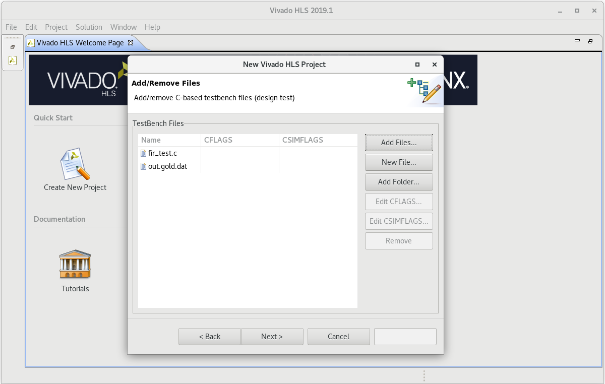

高层次综合¶
利用 FPGA 进行算法实现已经被广泛认知,但对于很多没有 FPGA 和 HDL 设计经验的开发者而言,往往又觉得开发门槛较高,因此全球相关的科研和工程人员都在致力于如何将 FPGA 技术介绍给更多的开发者,使更多人从 FPGA 的并行性、高性能、低功耗、灵活配置中获益。其中,Vivado HLS(高层次综合)就是一个成功的代表。通过 Vivado HLS 工具中,开发者可利用 C/C++ 语言对 FPGA 进行编程,这项技术已经趋于成熟,在实验核物理中也已广泛采用。
创建一个高级合成项目¶
打开 Vivado HLS 图形用户界面(GUI)，在欢迎页面中,选择创建新项目以打开项目向导。

输入项目名称；单击 Browse 导航到目录的位置；选择目录并单击 OK；单击 Next。

输入以下信息来指定 C 设计文件: 点击添加文件；选择（fir.c）并单击 OK；使用 Browse 按钮指定顶级函数（fir.c）功能；单击 Next。
在这个项目里只有一个 C 设计文件。 当有多个 C 文件要合成时，您必须在此阶段将它们全部添加到项目中。存在于本地目录中的任何头文件都会自动包含在项目中。
单击 Add Files 按钮来包含测试工作台文件（ fir_test.c）和 out.gold.dat。单击 Next。
测试工作台和测试工作台使用的所有文件(头文件除外)必须包括在内。如果您没有包含测试工作台使用的所有文件（例如，由测试工作台读取的数据文件）,可能会因为无法找到数据文件而失败。
解决方案配置窗口指定第一个解决方案的技术规范。一个项目可以有多个解决方案，每个解决方案使用不同的目标技术、包、约束和/或综合指令。
接受默认的解决方案名称(solution1)、时钟周期(10ns)和时钟不确定性(默认为12.5%的时钟周期,留空/未定义)。单击器件选择按钮,打开器件选择窗口。从可用设备列表中选择设备。单击 OK。
单击 Finish 打开 Vivado HLS 项目
HLS 项目的第一步是确认 C 代码是正确的。这个过程称为 C 验证或 C 仿真。在这个项目中,测试台将函数的输出数据与已知的好值进行比较。
高级合成步骤中,您将 C 设计合成为 RTL 设计,并查看合成报告。单击运行 C 合成工具栏按钮。合成完成后,报告文件将自动打开。